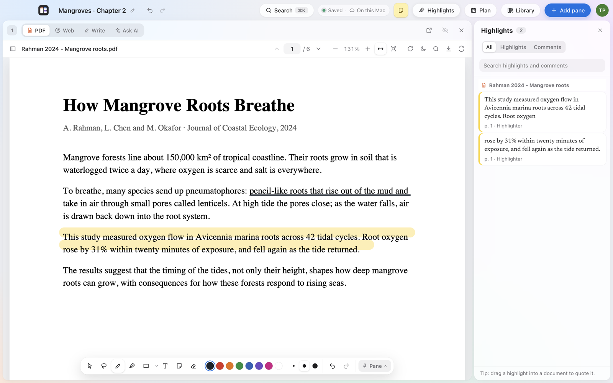
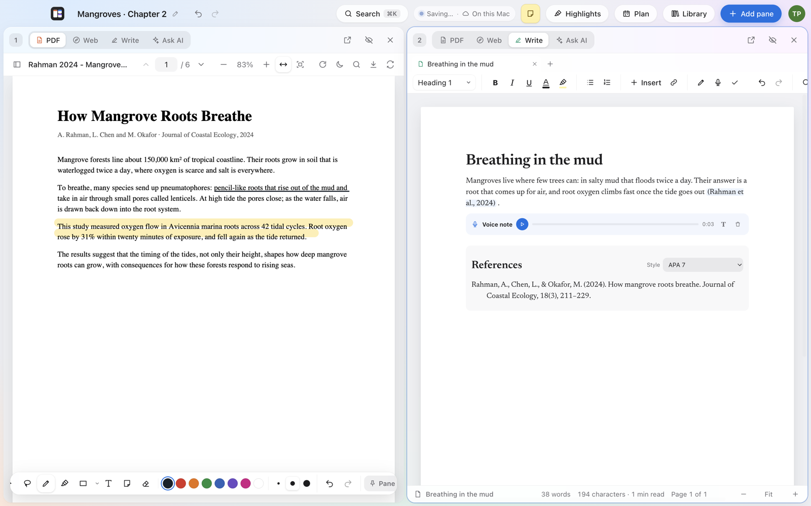
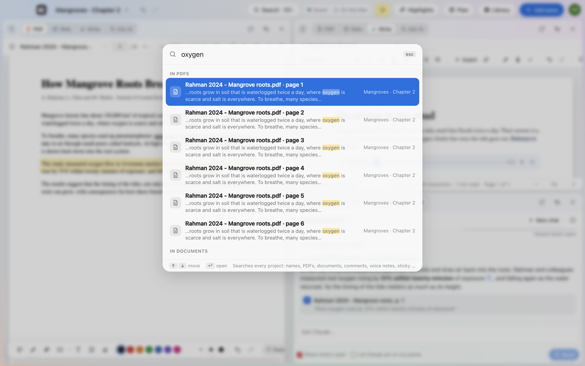
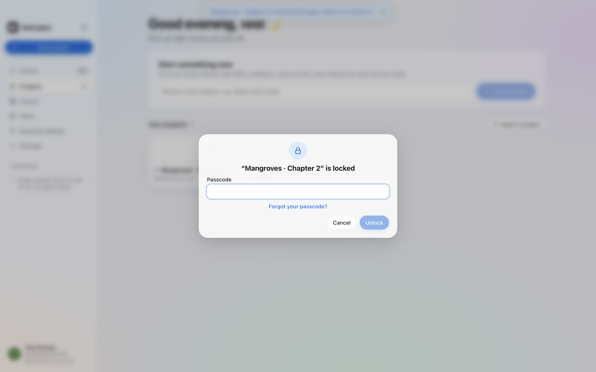

Save a web page to cite
One click keeps a PDF of the page and a clean readable copy, with the address and date.
Free public beta · for Mac
The tools a research project needs, side by side, and working together.

Side by side
Put the paper, the website, your draft and Claude next to each other. Each pane is a PDF, a website, a document or an AI chat, and you can switch any of them in a click.

PDF markup
A pen, a highlighter that stays straight along a line, shapes, text and sticky comments. Every mark is listed in the Highlights panel; click one to jump to it.

Writing
Real pages, headings, fonts, page layout and a word count, like a word processor, next to your sources. Type @ to cite a paper from your library, and the bibliography writes itself.

Claude
Claude reads the PDFs in your project and answers with the exact page it used. Click the number to open the paper right there. Uses your own Anthropic key.

Search
One box searches every project: names, the words inside your PDFs, your documents, comments, voice notes and sticky notes. It’s also the quickest way to do things.

Plan
Tasks with dates and checklists, a calendar, and a reading list from to-read to done. Type @ in a task to mention a paper, a highlight, or a new idea card.

Privacy
Locked projects hide their layout, stay out of search and the widget, and open only with Touch ID, your passcode or a code from your authenticator app.
One click keeps a PDF of the page and a clean readable copy, with the address and date.
Folders, tags, a reading list, previews, and files shared between projects.
Everything is saved on your Mac first, then backed up and synced. Works offline.
Your favourite or recent projects on the Mac desktop, one click from opening.
A notebook of quick notes in every project, with checklists and voice notes.
Stay signed in to sites, save logins safely in your Keychain, or browse privately.
Export a whole project as one file, with every PDF and note, and open it as a copy.
Dark mode that follows your Mac, and dark reading for PDFs late at night.
Free during the beta. macOS 14 Sonoma or later, Apple chip or Intel.
Download for Mac